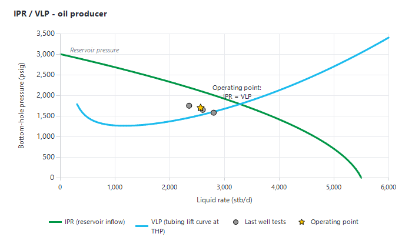
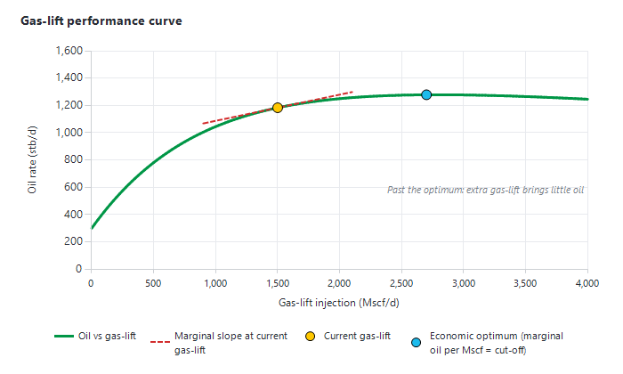

|
Nodal analysis and well models
1. Overview — what nodal analysis does in Precept
Every producer can carry a well model: an inflow model (IPR: the rate the reservoir delivers for a given flowing bottom-hole pressure) and an outflow model (VLP: the bottom-hole pressure the tubing needs to lift a given rate to the wellhead pressure). Where the two curves cross is the well's operating point. Precept uses the well model to:
•match each well to its latest well test (reservoir pressure, PI or C and n, VLP tuning);
•turn the measured tubing-head pressure (THP) into a bottom-hole pressure (BHP), test by test and over time;
•draw the VLP/IPR, Quicklook gradient, gas-lift and ESP charts on the right-hand side of the Producers window;
•generate the lift curves (VLP files) used by Material Balance and simulation forecasts.
The well model is updated from the Monitoring module (the Producers window, see Producers) or from the Material Balance window (see Material Balance).

Figure 1 — IPR and VLP curves of an oil producer. The operating point is where they cross; the last well tests are plotted against them.
2. Prosper or Precept's native well model
Precept can run the well model in one of two engines. Which one is used is decided when Precept is set up for your company, not per well:
•Petex Prosper (through OpenServer) — used when Precept is set up with a Prosper models folder. Precept looks for the well's Prosper file (<Well>.Out) in that folder and its sub-folders, and drives Prosper on your PC. Prosper must be installed and licensed. If the folder is the GAP model, the Prosper files are taken from the open GAP model, and Precept shows "You need to open the GAP model !" if GAP is not running.
•Precept's native well model — used when no Prosper folder is set. No Petex licence is needed: the completion, trajectory and PVT come from the Precept database and are edited in "Well Completion and traj" (section 5).
The screens are the same, with these differences:
|
Item
|
Prosper (OpenServer)
|
Native well model
|
|
Button in the Producers window
|
"Update Prosper model"
|
"Update Well model"
|
|
"Correlation" list
|
12 Prosper correlations (section 6.4)
|
"Beggs and Brill", "Hagedorn Brown", "Gray"
|
|
"Match VLP" (automatic F1/F2 match)
|
Available
|
Not available — enter F1 and F2 by hand
|
|
Solution node list ("Reservoir" / "BHP")
|
Shown when the well has a downhole gauge
|
Hidden (always at reservoir depth)
|
|
Gas-lift valves, casing gradients
|
Shown for gas-lift wells
|
Not modelled (single injection point)
|
|
"Well Completion and traj" button
|
Hidden (edit the Prosper file)
|
Shown
|
|
Tubing sensitivity (KPI)
|
Computed
|
Not computed
|
|
PVT match multipliers
|
Set in Prosper
|
Set in "Well Completion and traj", "PVT" tab
|
Some captions keep the word "Prosper" in native mode ("Save Prosper model", the "Prosper" column, "Prosper Analytics"). They then refer to the native well model.
3. Opening the Well Model Update window
The nodal-analysis window is titled "Well Model Update". Open it in one of these ways:
•In the Producers window (Production Monitoring), select a well, then click "Update Well model" (or "Update Prosper model") in the "Raw Data" group of the ribbon. The window opens on that well and runs the calculation straight away.
•In the Material Balance window, click "Nodal Analysis" on the ribbon.
•On installations where the "GAP" group is shown on the main ribbon, click "Update Well model" there.
Only producers of the monitoring asset model are listed. Injectors are not modelled in this window (see Injectors).
The window has:
•on the left, the well list ("Select well"), and a table with two value columns: "Well Test" (measured) and "Prosper" (calculated or input), plus "Match (%)". Rows: "Reservoir Pressure", "PI", "Liquid", "Oil", "Water", "Gas", "BSW", "GOR", "Gas-lift", "Total Gas", "THP", "BHP", "CHP". For gas wells "BSW" and "GOR" become "WGR" and "CGR", and the PI box becomes C and n. ESP wells show "Frequency", "PDP" and "Pump wear"; diluent wells show "Diluent". Below the table: the correlation list with the F1 and F2 boxes, "RECALCULATE", and "Comment:";
•the "SYSTEM CALCULATIONS" chart (VLP/IPR, section 6.1);
•the well-test table ("In the table below, click on the Well Test you want to load for Prosper matching");
•the "QUICKLOOK ANALYSIS" chart (section 6.3);
•a production chart of the well's daily parameters and tests. Click "Settings" to choose the series ("Parameters": Choke, CHP, THT, FP, BHP, Gas-lift, BHT, THP; "Well Test": GOR, BSW, CHP, Water, Gas, Liquid, Oil).
Double-click a chart to reset its zoom.
4. Matching a well test
1.Select the well in "Select well". Precept loads the newest well test whose status is "Valid", copies its THP, BSW and GOR (WGR and CGR for gas), gas-lift rate (or ESP frequency) into the "Prosper" column, and runs the system calculation.
2.To match another test, click it in the well-test table. A test that is not valid is refused ("The Well Test you have selected is not a valid Test. Please select another one !").
3.Compare the "Well Test" and "Prosper" columns. "Match (%)" is 100 × calculated ÷ measured, for Liquid, Gas, BHP, PDP and CHP.
4.Tune the inflow: edit "Reservoir Pressure" and "PI" (oil wells) or C and n (gas wells) in the "Prosper" column.
5.Tune the outflow (VLP): pick the correlation and edit F1 and F2. With Prosper, "Match VLP" does it for you from the measured gauge BHP ("VLP matched !"); it needs a downhole-gauge BHP on the test. With the native model, type F1 and F2.
6.Click "RECALCULATE" after each change, until the calculated rates and BHP match the test.
7.Type a "Comment:" and click "Save Prosper model". Precept shows "Prosper model updated !".
4.1 What is saved
Each save writes one well-model record: reservoir pressure, PI (oil) or inflow C and n (gas), correlation, F1, F2, API, solution GOR, salinity, gas gravity, reservoir temperature, the PVT match multipliers, your user name, your comment, and the date of the matched test ("Updated using Well Test"). Saving again on the same test replaces that record; saving on another test adds a new one, so the history of matches is kept. With Prosper, the Prosper file is saved too. Precept always uses the record with the latest "Updated using Well Test" date.
4.2 Inflow models
•Oil wells: productivity index (PI), a straight line q = PI × (Pres − Pwf). The native solver bends it with Vogel below the bubble point. With Prosper, the PI box is used only when the Prosper model's inflow method is PI entry; otherwise it shows 0 and the Prosper inflow model is used.
•Gas wells: back-pressure equation q = C × (Pres² − Pwf²)^n, with C and n.
•In forecasts, the inflow of each well is set in the Material Balance "Well Inflow" data, which also offers the Jones inflow (A·q² + B·q = ΔP) — see Material Balance.
4.3 VLP tuning — F1 and F2
F1 multiplies the gravity (hydrostatic) part of the pressure loss and F2 the friction part. 1 means untuned. Typical matched values are close to 1: values far from 1 usually point to a wrong test, a wrong completion or wrong PVT. The "VLP Correlation" chart of "Prosper Analytics" (section 9) shows F1 and F2 for every well against a 0.9–1.1 box.
4.4 PVT match multipliers
With the native model, the PVT is matched in "Well Completion and traj", "PVT" tab, under "PVT match tuning (1 = untuned)": "GOR / Pb ×", "Bo ×" and "Oil viscosity ×". They are saved with the well model when you click "Save Prosper model". With Prosper, match the PVT in Prosper.
4.5 Wells with no data
For a well with no test and no allocated production (a future well), Precept fills default inputs, shows "No allocated production or well test for this well. … click Recalculate.", and lets you type the inputs. If an input is missing, it lists what to enter ("To run the nodal analysis, enter: …"). If there are no tests, monthly allocated production is used as pseudo-tests.
5. Well Completion and traj (native well model)
Click "Well Completion and traj" in the "Model Update" group (native installations only; select a well first). The window "Well geometry — <well>" has a "Save" button and these tabs:
•"Completion": the "Equipment" table ("Type", "Measured depth", "Tubing ID", "Roughness"). Types: "X-mas tree" (first row, fixed), "Tubing" (several rows make a tapered string), "GLV" (gas-lift wells: the injection depth), "Pressure gauge", "ESP" (ESP wells). The "Well Geometry" table holds the trajectory ("MDRT", "TVDRT", optional "Azimuth") with "Rotary table elevation"; the "Well profile" chart updates as you type. At least one Tubing row with an ID is needed. The deepest depth is the reservoir datum.
•"PVT": "Oil gravity", "Gas gravity", "Solution GOR (Rs)", "Reservoir temperature", "Water salinity", the "PVT match tuning (1 = untuned)" multipliers, and a read-only "PVT properties vs pressure" table.
•"ESP" (ESP wells only): "Pump model" from the catalogue, "Number of stages", "Wear factor" (1 = new), with the "Pump head vs rate" chart. "Edit pump catalogue…" opens the "ESP pump catalogue" window, where pump head and power curves can be pasted in the Prosper ESP database layout and saved with "Save catalogue". The running frequency is taken from each well test.
•"VLP" (all wells except ESP wells): generates the ECLIPSE lift-curve file used by forecasts — see Material Balance, section 5.
The same window opens from "Well completion and VLP" in the Material Balance window.
Note: the "Correlation", "F1 (tuning)" and "F2 (tuning)" of the "VLP" tab are read from the saved well model. To change them for good, change them in "Well Model Update" and click "Save Prosper model".
Gas lift: Precept models one injection point, at the depth of the "GLV" row. Without a "GLV" row, gas-lift rates have no effect on the well model.
6. The calculations
6.1 System calculation and the VLP/IPR chart
The system calculation finds the operating point at the test THP (and gas-lift rate or ESP frequency): Liquid, Oil, Water, Gas, Total Gas and BHP fill the "Prosper" column. The "SYSTEM CALCULATIONS" chart shows:
•"VLP" (blue) and "IPR" (red) — X axis "Liquid rate" (oil) or "Gas rate" (gas), Y axis "Pressure", in the asset's units;
•"Last Test" (red), "Old Tests" (grey: the tests inside the time window of the production chart — zoom the production chart to change them) and "Loaded Test" (the test you are matching).
With Prosper and a downhole gauge, the solution node list chooses where the curves are drawn: "BHP" (at the gauge) or "Reservoir" (at reservoir depth). At reservoir depth, measured test BHPs are shifted by the calculated pressure difference between gauge and reservoir depth. If the curves do not cross, Precept shows "No Intersection points !".
6.2 BHP from THP
For the loaded test, the system calculation also computes the BHP at the gauge depth from the measured THP, so you can compare it with the measured BHP. Click "BHP vs Time" to do it for the valid tests over time (first, last and every Nth test, about 50 points): the result is drawn as "BHP_Prosper" on the production chart (oil producers). "Calculate KPIs" (section 7) stores BHP from THP for the valid tests of the last two years.
6.3 Quicklook gradients
The "QUICKLOOK ANALYSIS" chart is a pressure-versus-depth plot (X "Pressure", Y "Depth TVDRT", depth downwards): the calculated "Tubing Gradient", the measured points "THP measured", "BHP measured" and, for ESP wells, "PDP measured", and depth lines for the gas-lift injection point and diluent injection. A good match puts the measured points on the gradient. For gas-lift wells modelled in Prosper, it also draws "Actual Casing Gradient" and "Theoritical Casing Gradient" and the gas-lift valves GLV1–GLV3 coloured by status (grey no data, red closed, orange partly open, green open).
6.4 VLP correlations
|
Engine
|
Correlations offered
|
|
Native well model
|
"Beggs and Brill" (default, with the Payne hold-up correction), "Hagedorn Brown", "Gray" (gas and condensate wells)
|
|
Prosper
|
"Petroleum Experts", "Petroleum Experts 2" to "Petroleum Experts 5", "Duns and Ros Modified", "Hagedorn Brown", "Fancher Brown", "Mukerjee Brill", "Beggs and Brill", "Orkiszewski", "Duns and Ros Original"
|
The native model marches down from the THP in steps of at most 250 ft, with tapered tubing, lift gas added above the injection depth and the ESP stages. Temperature varies linearly from the wellhead (test THT) to the reservoir temperature. PVT is black oil (Standing, Vasquez-Beggs, Beggs-Robinson, Dranchuk-Abou-Kassem, Lee, Sutton) with your match multipliers.
6.5 ESP wells
For ESP wells the frequency comes from the well test. Pump head is scaled to that frequency with the affinity laws (rate ∝ f, head ∝ f², power ∝ f³), multiplied by the number of stages and the wear factor. "PDP" (pump discharge pressure) is matched like the BHP, and "Pump wear" is saved with the model.
7. Calculate KPIs
In "Well Model Update", group "Model Update":
•"Calculate KPIs" — runs all the well-model calculations for the selected well and stores the results ("KPI has been succesfully calculated !");
•"Calculate KPIs for all wells" — does it for every producer.
A progress window shows each step: "Perform BHP from THP calculations", "Perform Gradient calculations", "Perform System calculations", "Perform VLP/IPR calculations", "QuickLook calculations", "Perform Gas-lift PC calculations", "ESP Performance calculations", "Perform tubing sensitivities calculations". Only tests with status "Valid" are used; if a well has no tests, allocated production is used instead.
|
Result
|
Tests used
|
Where you see it
|
|
BHP from THP (calculated vs measured gauge BHP, and flowing BHP at reservoir depth; PDP for ESP wells)
|
Valid tests of the last 2 years
|
Producers window, "Actual BHP vs Prosper BHP"
|
|
System calculation (model rates at each test THP vs measured rates)
|
Valid tests of the last 2 years
|
Producers window, "System calculation"
|
|
VLP/IPR curves
|
Latest valid test
|
Producers window, "VLP / IPR (last 1000 days)"; Monitoring Plots "VLP", "Productivity Index"
|
|
Gradient and Quicklook
|
Latest valid test
|
Producers window, "Quicklook"
|
|
Gas-lift performance curve (oil vs gas-lift)
|
Latest valid test
|
Producers window, "Gas-Lift Performance curve"; "Gas-lift Optimizer"
|
|
ESP performance and ESP performance curve (40–60 Hz)
|
Latest valid test
|
Producers window, "ESP Performance", "ESP Performance curve"
|
|
Tubing sensitivity (oil rate with 4.5", 5.5" and 7" tubing; Prosper only)
|
Latest valid test
|
Monitoring Plots, "Tubing sensitivity"
|
"Calculate KPIs" also builds the THP performance curve (oil rate vs THP) shown in the "THP Performance curve " panel; the THP range of this curve is configured per asset, so the panel is available on some installations only.
Run "Calculate KPIs" after each well-model update and after new well tests, so that the Producers charts reflect the latest match.
8. How the results appear in the Producers window
The right-hand side of the Producers window holds three chart slots. Click ">" on a slot to cycle through the available charts; gas-lift charts appear only for gas-lift wells, ESP charts only for ESP wells. The default charts depend on your installation.
|
Chart
|
What it shows
|
|
"Production"
|
Allocated production and shortfalls ("Oil Production", "Oil Shortfalls"); "Oil" / "Gas" selector
|
|
"Actual BHP vs Prosper BHP"
|
Measured "THP" and "BHP" over time, with the calculated "BHP Prosper" (ESP wells: "PDP" and "PDP Prosper"). A gap between measured and calculated BHP means the well model needs re-matching, or the gauge drifts
|
|
"VLP / IPR (last 1000 days)"
|
"VLP" and "IPR" from the last KPI run, with the last three valid tests ("Last Test", "n-1", "n-2") and "Old Tests" (valid tests of the last 1000 days), at reservoir depth. Solution node selector "Reservoir" / "BHP". Tests moving away from the IPR show a change in reservoir pressure or productivity
|
|
"System calculation"
|
Measured "THP", "BHP" and "Liquid" (or "Gas") over time with the model rate "Liquid Prosper" (or "Gas Prosper")
|
|
"Gas-Lift Performance curve"
|
Oil (or gas) rate vs gas-lift rate from the last KPI run, with "Last Test", "Old Tests" and a vertical "Actual" line at the current gas-lift rate
|
|
"Quicklook"
|
The gradient chart of section 6.3
|
|
"THP Performance curve "
|
Oil (or gas) rate vs THP, with the last tests (installations where it is configured)
|
|
"ESP Performance"
|
Pump "Head" and "Head (including Pump Wear Factor)" vs operating rate, "Efficiency", "Downtrust" / "Uptrust" limits, with test points
|
|
"ESP Performance curve"
|
Oil rate and flowing BHP vs frequency
|
|
"Virtual Meter"
|
Rates estimated by the well model vs allocation (installations with real-time monitoring)
|
See Producers for the rest of the window.

Figure 2 — Gas-lift performance curve: oil rate rises with gas-lift, then flattens. Past the economic optimum, each extra unit of lift gas brings little oil (low marginal slope).
9. Field-wide views of the well models
In "Well Model Update", group "Prosper Analytics":
•"Dashboard" opens "Prosper Analytics": the latest well model of every oil producer, with "Location" and "Reservoir" filters and bar charts "Reservoir Pressure", "Productivity Index", "API", "Solution GOR" and "Salinity", the "VLP Correlation" chart (F1 vs F2, with a 0.9–1.1 box) and "Last Prosper model Update" (date of each well's last match). Click a row to highlight that well; press Esc to clear.
•"Prosper model updates history" opens "Prosper model history": every saved match of the well, newest first, and a chart of reservoir pressure, PI (or inflow C for gas wells), daily BHP and test rates over time.
•"Maps" opens the map window with well-model parameters (see Reservoir management plots).
•"Well Profile" opens Monitoring Plots on the well's profile (completion and trajectory).
The "Raw Data" group opens the raw tables: "Production parameters" and "Well Tests".
10. Gas-lift Optimizer
In the Producers window, click "Gas-lift Optimizer" in the "Reservoir Monitoring" group (not shown on every installation). The "Gas-lift Optimizer" window plots the stored gas-lift performance curves of the selected gas-lift wells:
1.Pick a location, then one or more wells.
2.Choose "vs Gas-lift" or "vs Total Gas" for the X axis.
3.Read the table: "Well", "Current GL", "Delta Oil with 1 MMscf/d less", "Delta Oil with 1 MMscf/d more".
4.Move lift gas from the wells that lose least oil with less gas to the wells that gain most oil with more gas, until the marginal gains are similar. In "vs Total Gas" mode, a dashed slope line shows each well's local marginal ratio.
This window compares marginal slopes; it does not allocate the gas for you. The full field optimiser ("Optimizer" in Field Monitoring, button "Gas-lift PC") shows each well's point "Before Optimisation" and "After Optimisation" on the same curves.
11. Checking the operating point before a forecast
For Material Balance forecasts, use "VLP/IPR check at start forecast" in the Material Balance window to check that each producer can flow on day one with its forecast inflow and VLP file — see Material Balance, section 5.3.
|